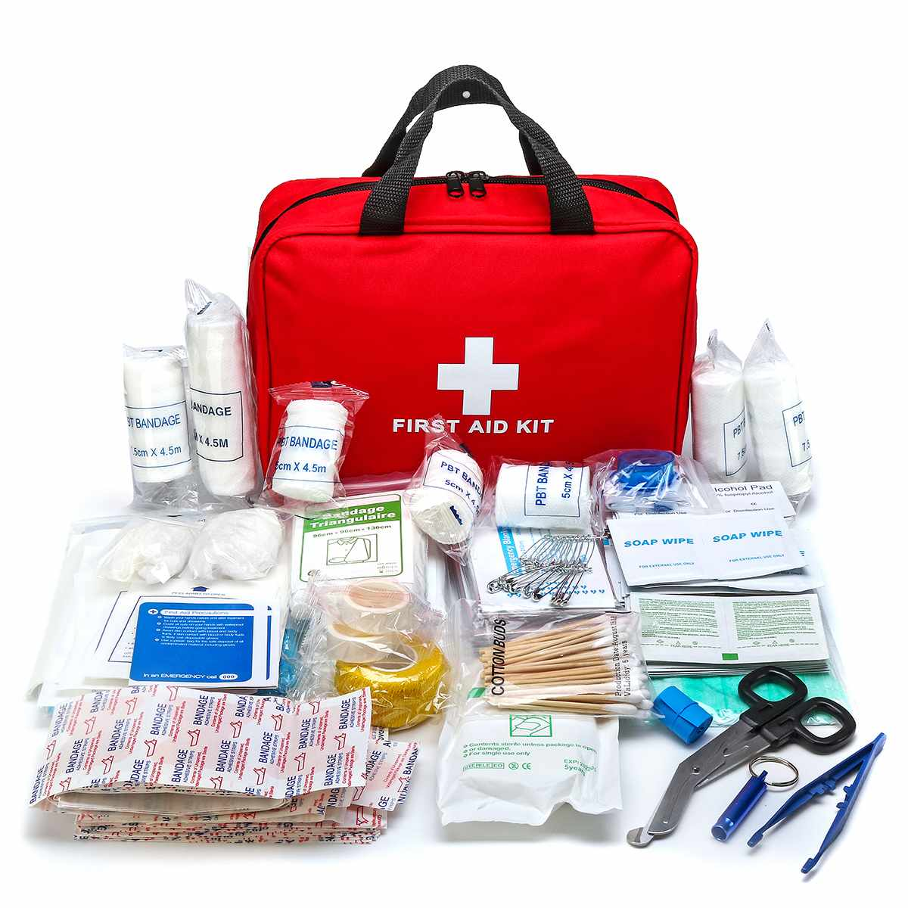

Capitolul I - Obligații în caz de accident cu victime și componentele trusei medicale de prim ajutor
Primul ajutor cuprinde totalitatea măsurilor care se aplică imediat în cazul unei urgenţe medicale până la sosirea serviciului de urgenţă sau până la intervenţia unui medic specialist.
Este importantă cunoașterea acordării primului ajutor, astfel încât persoanele care au nevoie de ajutor să aibă mai multe șanse de recuperare sau de supraviețuire.
Conducătorul auto care constată existența unui accident soldat cu victime are urmatoarele obligații:
- să oprească imediat la locul accidentului;
- să îndepărteze persoanele curioase;
- să folosească trusa de prim ajutor;
- să ceară ajutorul persoanelor din jur (dacă se aflaă la fața locului, este de preferat o persoană calificată);
- să debaraseze victima;
- să pozitioneze victima în funcție de leziunile pe care le prezintă;
- să îndepărteze obiectele vestimentare (curele, cravate, bretele, corsete) ce ar putea împiedica sau îngreuna respirația și circulația normală a sângelui;
- să stabilească prioritățile de acordare a primului ajutor (stop cardio-respirator, hemoragie, fracturi);
- să trateze rănile si arsurile, dacă este cazul;
- să evite manevrele inutile care ar putea agrava starea victimei;
- să apeleze imediat la cea mai apropiată unitate sanitară;
- să asigure transportul victimei la spital;
- să urmărească pe timpul transportului funcția respiratorie si cea cardiacă a victimei precum și oprirea hemoragiilor existente;
- să comunice cadrelor medicale ora producerii accidentului, ce masuri de prim ajutor s-au acordat, ora si minutul aplicării garoului, medicamentele administrate si dacă au parut schimbări importante în starea victimei, comparativ cu momentul producerii accidentului;
- să comunice cadrelor medicale dacă s-a produs decesul și ora la care acesta a avut loc;
- să anunțe organele de poliție, acest lucru se face apelând numărul unic de urgențe 112.
- să se întoarcă la locul accidentului, în cazul în care a însoțit victima la spital și este parte implicată în accident;
- să indice organelor de anchetă, cât mai exact, locul victimei si al vehiculului, dacă acestea au fost deplasate între timp;
- să nu șteargă urmele existente, care pot constitui dovezi judiciare;
- să prezinte organelor de anchetă martorii prezenți în momentul producerii accidentului.
Trusa de prim ajutor

Trusa de prim ajutor
COMPONENTELE TRUSEI DE PRIM AJUTOR
Trusa de prim ajutor trebuie sa conțină următoarele produse:
A) Instrumentar:
- foarfece – 1 buc;
- dispozitiv pentru respirație gură la gură – 1 buc.
B) Materiale sanitare:
- atelă - 2 buc;
- plasture - o rolă;
- leucoplast 2,5 cm/ 2,5 cm - o rolă;
- comprese de tifon sterilizate - 5 pachete;
- fașă tifon sterilizate - 5 pachete;
- fașă elastică 5 cm/4m - 2 bucăți;
- bandaj triunghiular din pânză L=80mm - 2 buc;
- vată medicinală sterilizată - 20 grame;
- pansament steril absorbant diferite dimensiuni – 4 buc;
- garou - 1 buc;
- mănuși de unică folosință - două perechi.
C) Medicamente:
- soluție dezinfectantă cu alcool sanitar 70-50 ml;
- pansament cu rivanol - 5 bucați;
- analgezic (ex: Algocalmin);
- antispastice (ex: Scobutil);
- antiinflamator (ex: Paduden).
D) Materiale diverse:
- ace de siguranță - 6 bucați;
- broșura cu intrcțiunile de prim ajutor - 1 buc;
- listă conținut trusă sanitară.